01 / OVERVIEW派系概览
长城之后的龙之帝国：扛线、射爆，用炮兵解决一切。 推荐首发领主：妙音。阴阳调和：建筑与科技分属阴 / 阳，保持平衡才能拿到全局加成；长城与商队是北方屏障和经济动脉。
秩序 · 远程 / 炮兵
阴阳调和：建筑与科技分属阴 / 阳，保持平衡才能拿到全局加成；长城与商队是北方屏障和经济动脉。
为什么玩它
兵种齐、经济稳、出生位置相对安全，是第一次认真通关的首选。
要注意什么
机动性一般，阵型被绕后会很痛；整体打法偏“摆好阵等对面来”。
先统一长城内侧省份；玉勇扛线、玉勇弩手输出，尽早补炮兵。妙音本人是极强的单体战力，别只把她当法师。
本页数值为 Patch 9.0.4 / Ultra 规模 / 0 级，不含科技、技能、装备、领主光环与战场增益。维护费是战役基础值，受难度、补给线与派系减免影响。中文兵种名为社区习惯译名，以游戏内简中为准。
02 / RECOMMENDED推荐兵种
每个派系挑 6 个最值得先练、先招、先知道的名字。不是“唯一答案”，但能覆盖扛线、输出、机动和攻城。
高护甲核心。
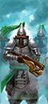
稳定输出。
高破甲火枪。
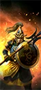
高护甲、反大型。
范围轰炸。
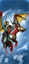
高机动、反大型。
03 / ROSTER完整兵种表
按类别展开。T 是招募等级；兵模是单位里的模型数；远程 / 射程一栏，前者是每 10 秒全队伤害，后者是射程。名将团单独列在最后。
← 左右滑动查看完整数值 →
领主与传奇领主9 个单位
| 兵种 | T | 兵模 | 生命 | 护甲 | 领导 | 速度 | 近攻 | 近防 | 武器 | 远程 / 射程 | 维护 |
|---|---|---|---|---|---|---|---|---|---|---|---|
Bhashiva, the White TigerLord |
— | 1 | 5,248 | 60 | 80 | 52 | 65 | 50 | 500 | — | 300 |
Celestial GeneralLord |
— | 1 | 4,868 | 100 | 80 | 38 | 60 | 40 | 420 | — | 250 |
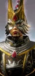 Dragon-blooded Shugengan Lord (Yang)Wizard Lord |
— | 1 | 4,368 | 30 | 70 | 38 | 55 | 40 | 400 | — | 300 |
Dragon-blooded Shugengan Lord (Yin)Wizard Lord |
— | 1 | 4,368 | 30 | 70 | 38 | 55 | 40 | 400 | — | 300 |
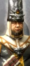 Lord MagistrateLord |
— | 1 | 4,568 | 40 | 70 | 34 | 45 | 45 | 375 | — | 250 |
Miao Ying, the Storm DragonWizard Lord |
— | 1 | 8,424 | 70 | 90 | 46 | 65 | 55 | 430 | — | 600 |
Tiger Warrior SawaiLord |
— | 1 | 5,076 | 40 | 75 | 44 | 50 | 55 | 450 | — | 275 |
Yuan Bo, the Jade DragonWizard Lord |
— | 1 | 8,424 | 120 | 90 | 46 | 65 | 45 | 460 | — | 500 |
Zhao Ming, the Iron DragonWizard Lord |
— | 1 | 8,424 | 70 | 90 | 46 | 55 | 60 | 430 | — | 500 |
英雄10 个单位
| 兵种 | T | 兵模 | 生命 | 护甲 | 领导 | 速度 | 近攻 | 近防 | 武器 | 远程 / 射程 | 维护 |
|---|---|---|---|---|---|---|---|---|---|---|---|
AlchemistWizard |
— | 1 | 3,420 | 15 | 60 | 34 | 35 | 30 | 300 | — | 250 |
AstromancerWizard |
— | 1 | 7,306 | 40 | 60 | 120 | 44 | 50 | 560 | — | 450 |
Clawspeaker (Beasts)Wizard |
— | 1 | 4,548 | 20 | 65 | 44 | 42 | 40 | 325 | — | 275 |
Clawspeaker (Life)Wizard |
— | 1 | 4,548 | 20 | 65 | 44 | 42 | 40 | 325 | — | 275 |
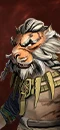 Clawspeaker (Shadows)Wizard |
— | 1 | 4,548 | 20 | 65 | 44 | 42 | 40 | 325 | — | 275 |
 FelixMelee Specialist |
— | 1 | 4,168 | 70 | 70 | 34 | 50 | 55 | 380 | — | — |
Gate MasterHybrid Weapon Specialist |
— | 1 | 4,128 | 95 | 70 | 34 | 46 | 50 | 375 | 300 / 160m | 250 |
 GotrekMelee Specialist |
— | 1 | 5,902 | 0 | 100 | 42 | 70 | 50 | 470 | — | — |
Saytang the WatcherSpecialist Artillery |
— | 1 | 12,620 | 100 | 90 | 48 | 42 | 28 | 550 | 514 / 350m | — |
Taoyan the MercilessTrident Infantry |
— | 1 | 4,588 | 90 | 80 | 34 | 50 | 60 | 420 | — | — |
近战步兵6 个单位
| 兵种 | T | 兵模 | 生命 | 护甲 | 领导 | 速度 | 近攻 | 近防 | 武器 | 远程 / 射程 | 维护 |
|---|---|---|---|---|---|---|---|---|---|---|---|
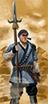 Peasant Long SpearmenSpear Infantry |
T1 | 160 | 8,960 | 15 | 55 | 30 | 20 | 24 | 25 | — | 88 |
Jade WarriorsSword Infantry |
T2 | 120 | 8,280 | 70 | 64 | 28 | 24 | 34 | 28 | — | 137 |
Jade Warriors (Halberds)Halberd Infantry |
T2 | 120 | 8,280 | 70 | 64 | 28 | 22 | 38 | 28 | — | 162 |
Tiger WarriorsDual Axe Infantry |
T2 | 80 | 8,000 | 30 | 70 | 44 | 42 | 34 | 54 | — | 225 |
Celestial Dragon GuardHalberd Infantry |
T3 | 100 | 8,800 | 95 | 72 | 28 | 34 | 43 | 36 | — | 263 |
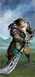 Iron Claw Tiger WarriorsGuandao Infantry |
T4 | 80 | 8,800 | 60 | 75 | 44 | 40 | 46 | 50 | — | 350 |
远程步兵8 个单位
| 兵种 | T | 兵模 | 生命 | 护甲 | 领导 | 速度 | 近攻 | 近防 | 武器 | 远程 / 射程 | 维护 |
|---|---|---|---|---|---|---|---|---|---|---|---|
Peasant ArchersMissile Infantry |
T1 | 120 | 6,480 | 15 | 45 | 33 | 10 | 13 | 24 | 14 / 140m | 100 |
Iron Hail GunnersClose-Quarters Missile Infantry |
T2 | 90 | 6,210 | 30 | 50 | 33 | 16 | 16 | 24 | 32 / 90m | 125 |
Jade Warrior CrossbowsMissile Infantry |
T2 | 90 | 6,210 | 70 | 54 | 30 | 16 | 16 | 24 | 18 / 160m | 150 |
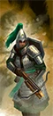 Jade Warrior Crossbows (Shields)Missile Infantry |
T2 | 90 | 6,210 | 70 | 54 | 30 | 16 | 24 | 24 | 18 / 160m | 162 |
Nan-Gau GrenadiersExplosives Infantry |
T2 | 90 | 6,210 | 40 | 50 | 33 | 24 | 24 | 28 | 16 / 55m | 125 |
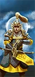 Celestial Dragon CrossbowsMissile Infantry |
T3 | 80 | 7,040 | 95 | 62 | 28 | 26 | 32 | 33 | 26 / 160m | 263 |
Crane GunnersSpecialist Missile Infantry |
T3 | 32 | 4,320 | 30 | 50 | 30 | 12 | 18 | 24 | 34 / 275m | 300 |
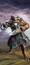 Tiger Warrior StalkersThrowing Disc Infantry |
T3 | 60 | 6,000 | 15 | 70 | 52 | 42 | 40 | 40 | 33 / 70m | 275 |
怪步 / 飞行步兵1 个单位
| 兵种 | T | 兵模 | 生命 | 护甲 | 领导 | 速度 | 近攻 | 近防 | 武器 | 远程 / 射程 | 维护 |
|---|---|---|---|---|---|---|---|---|---|---|---|
Onyx CrowmenFlying Melee Infantry |
T3 | 60 | 5,220 | 15 | 50 | 90 | 30 | 32 | 45 | — | 175 |
近战骑兵2 个单位
| 兵种 | T | 兵模 | 生命 | 护甲 | 领导 | 速度 | 近攻 | 近防 | 武器 | 远程 / 射程 | 维护 |
|---|---|---|---|---|---|---|---|---|---|---|---|
Peasant HorsemenCavalry |
T1 | 60 | 5,520 | 15 | 55 | 90 | 26 | 26 | 28 | — | 100 |
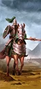 Jade LancersShock Cavalry |
T2 | 60 | 6,480 | 100 | 64 | 78 | 26 | 28 | 30 | — | 200 |
怪骑1 个单位
| 兵种 | T | 兵模 | 生命 | 护甲 | 领导 | 速度 | 近攻 | 近防 | 武器 | 远程 / 射程 | 维护 |
|---|---|---|---|---|---|---|---|---|---|---|---|
Great Longma RidersFlying Cavalry |
T3 | 24 | 6,264 | 110 | 72 | 105 | 36 | 34 | 65 | — | 337 |
战车2 个单位
| 兵种 | T | 兵模 | 生命 | 护甲 | 领导 | 速度 | 近攻 | 近防 | 武器 | 远程 / 射程 | 维护 |
|---|---|---|---|---|---|---|---|---|---|---|---|
Wu Xing War CompassMagic Chariot |
T2 | 1 | 6,240 | 80 | 75 | 30 | 30 | 20 | 160 | — | 238 |
Zhangu War DrumSupport Chariot |
T3 | 1 | 6,232 | 80 | 75 | 30 | 30 | 20 | 160 | — | 275 |
战兽2 个单位
| 兵种 | T | 兵模 | 生命 | 护甲 | 领导 | 速度 | 近攻 | 近防 | 武器 | 远程 / 射程 | 维护 |
|---|---|---|---|---|---|---|---|---|---|---|---|
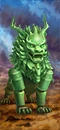 Jade LionMonstrous Beast |
T3 | 1 | 5,808 | 90 | 65 | 75 | 55 | 40 | 420 | — | 300 |
Jet LionMonstrous Beast |
T3 | 1 | 5,808 | 90 | 65 | 75 | 40 | 60 | 420 | — | 300 |
巨兽3 个单位
| 兵种 | T | 兵模 | 生命 | 护甲 | 领导 | 速度 | 近攻 | 近防 | 武器 | 远程 / 射程 | 维护 |
|---|---|---|---|---|---|---|---|---|---|---|---|
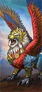 Celestial LionFlying Monster |
T3 | 1 | 6,176 | 80 | 65 | 85 | 42 | 36 | 450 | — | 325 |
Great Moon BirdFlying Monster |
T4 | 1 | 7,298 | 40 | 70 | 120 | 44 | 50 | 560 | — | 400 |
Terracotta SentinelMonster |
T4 | 1 | 12,620 | 100 | 85 | 48 | 65 | 30 | 630 | — | 400 |
炮兵 / 战争机器4 个单位
| 兵种 | T | 兵模 | 生命 | 护甲 | 领导 | 速度 | 近攻 | 近防 | 武器 | 远程 / 射程 | 维护 |
|---|---|---|---|---|---|---|---|---|---|---|---|
Grand CannonsSiege Artillery |
T2 | 4 | 2,740 | 20 | 50 | 30 | 10 | 6 | 24 | 200 / 450m | 225 |
Sky LanternFlying War Machine |
T2 | 1 | 6,048 | 30 | 70 | 60 | 8 | 8 | 26 | 108 / 275m | 225 |
Fire Rain Rocket BatteryRocket Battery |
T3 | 4 | 2,540 | 20 | 50 | 30 | 10 | 6 | 24 | 560 / 400m | 300 |
Sky-junkFlying War Machine |
T4 | 1 | 10,048 | 80 | 80 | 30 | 8 | 8 | 26 | 560 / 360m | 375 |
名将团7 个单位
| 兵种 | T | 兵模 | 生命 | 护甲 | 领导 | 速度 | 近攻 | 近防 | 武器 | 远程 / 射程 | 维护 |
|---|---|---|---|---|---|---|---|---|---|---|---|
Bandits of the Silver Road (Peasant Archers)Missile Infantry · Renown |
T2 | 120 | 6,480 | 15 | 55 | 33 | 27 | 31 | 24 | 14 / 140m | 156 |
Empress Crowmen (Onyx Crowmen)Flying Melee Infantry · Renown |
T3 | 60 | 5,220 | 15 | 60 | 90 | 38 | 41 | 45 | — | 250 |
The Dune Dragons (Celestial Dragon Guard)Halberd Infantry · Renown |
T3 | 100 | 8,800 | 95 | 82 | 28 | 43 | 53 | 36 | — | 338 |
The Grace of Quai Yin (Celestial Dragon Crossbows)Missile Infantry · Renown |
T3 | 80 | 7,040 | 95 | 72 | 30 | 34 | 41 | 33 | 29 / 180m | 325 |
The Jade War Drum (Zhangu War Drum)Support Chariot · Renown |
T3 | 1 | 6,232 | 95 | 75 | 30 | 38 | 27 | 160 | — | 338 |
Righteous Lances of Wei-Jin (Great Longma Riders)Flying Cavalry · Renown |
T4 | 24 | 6,264 | 110 | 82 | 105 | 45 | 43 | 65 | — | 412 |
The Green Guardian (Terracotta Sentinel)Monster · Renown |
T5 | 1 | 12,620 | 100 | 95 | 48 | 78 | 38 | 630 | — | 500 |
已排除“扩展名册（extended roster）”单位。数值为 Patch 9.0.4；不同版本可能微调。
04 / ARMY BUILD配兵思路
先按角色填槽，再按对手换兵。下面是一个通用的 20 槽骨架，以及用本页推荐兵种拼出的示例。
| 角色 | 建议槽位 | 说明 |
|---|---|---|
| 扛线 | 5–6 | 持盾 / 重甲步兵，任务是站住，不是杀敌。 |
| 远程 | 3–5 | 弓箭、火枪或炮兵；至少 2 队能打重甲。 |
| 机动 | 3–4 | 骑兵、战车、飞行单位；包抄、背冲、追逃。 |
| 巨兽 / 炮兵 | 1–3 | 破阵、斩将、攻城；别孤军深入。 |
| 英雄 | 1–3 | 法师 + 支援英雄，嵌入主力。 |
示例：4× 玉勇 + 2× 天龙卫队 + 4× 玉勇弩手 + 3× 巨龙马骑兵 + 领主 + 1 英雄，余下 3–4 槽按对手补破甲 / 反大型 / 炮兵。
重甲多带破甲（火枪、大炮、巨斧）；巨兽多带反大型（长戟、弩炮）；鼠人 / 绿皮多带范围伤害（吹息、炮兵、火焰）；骑兵多留 2 队长戟或反大型。不要一套配兵打到底。